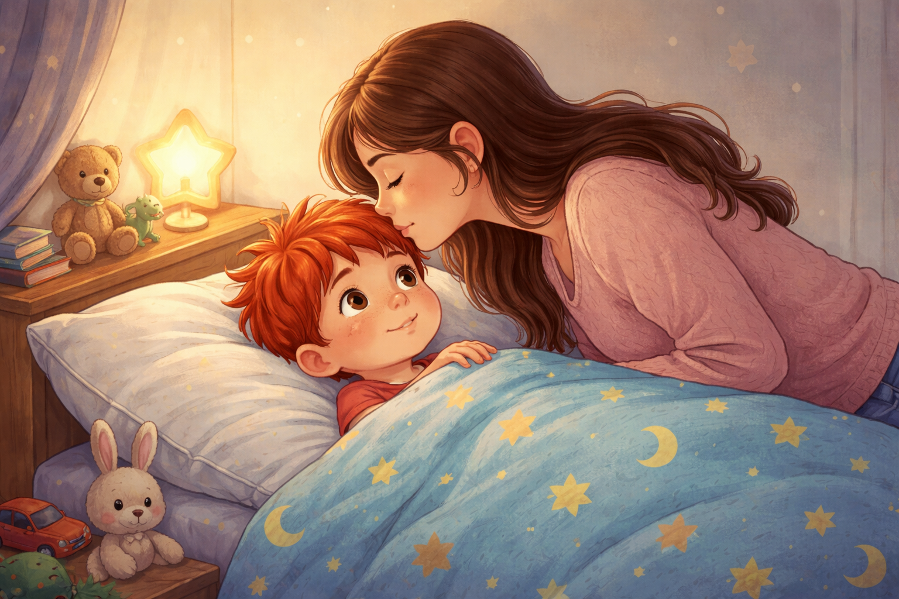
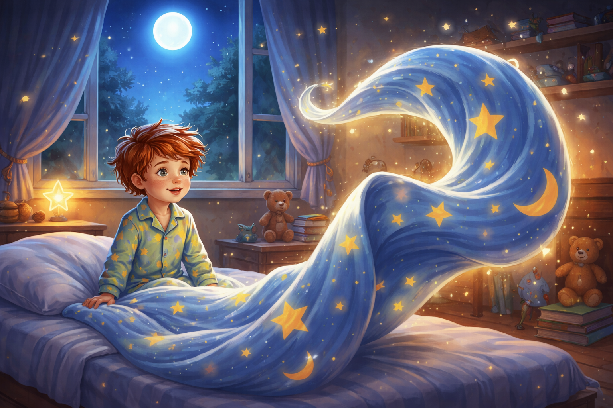
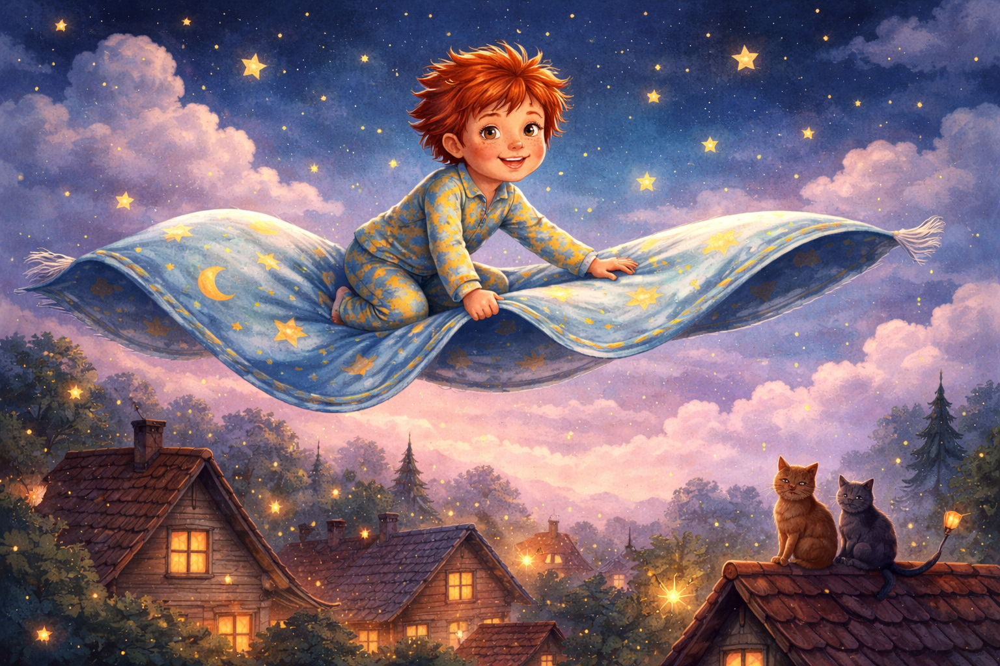
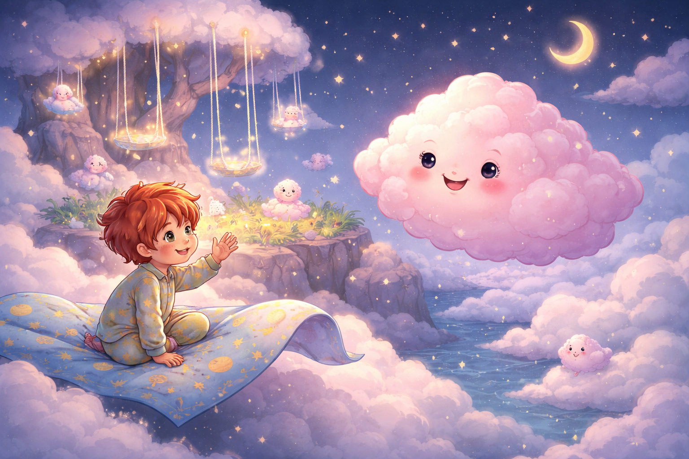
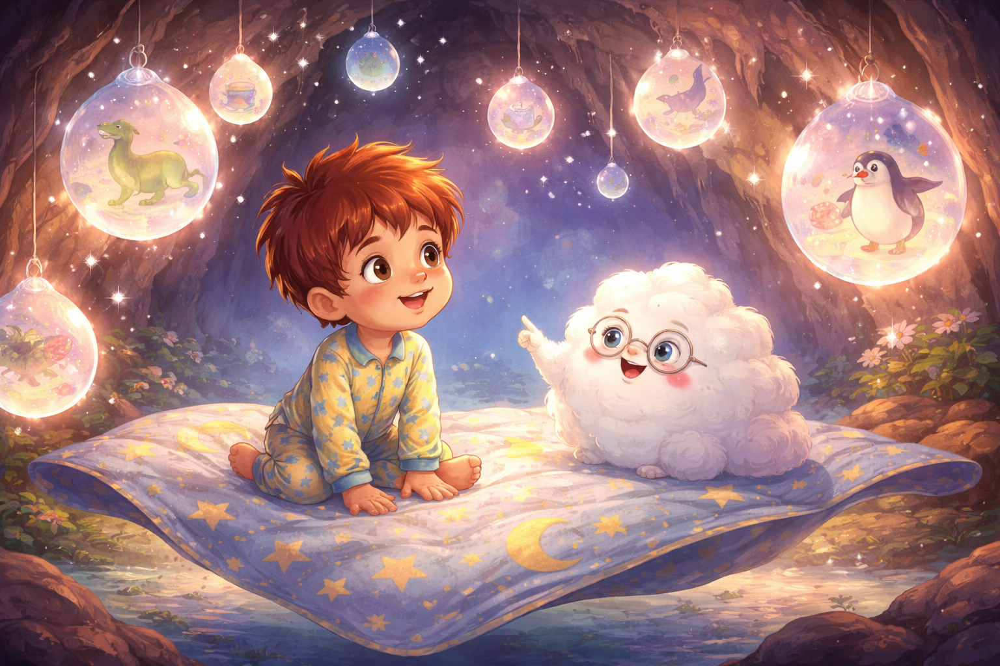
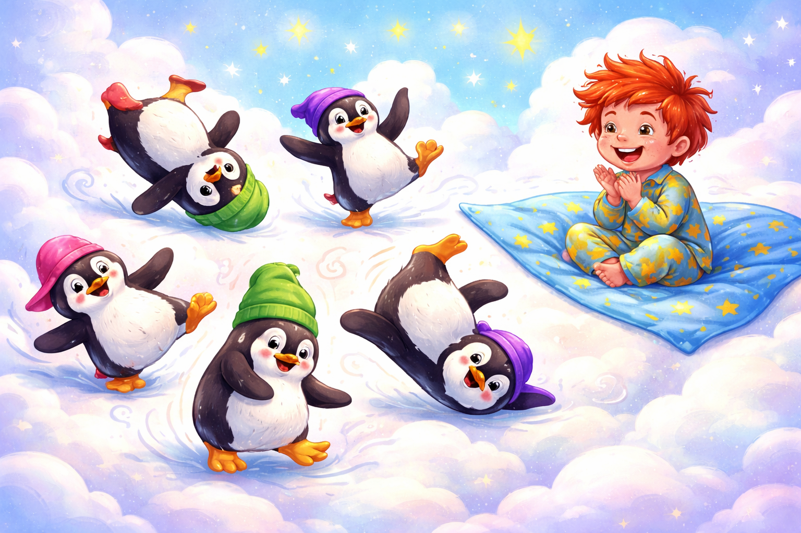
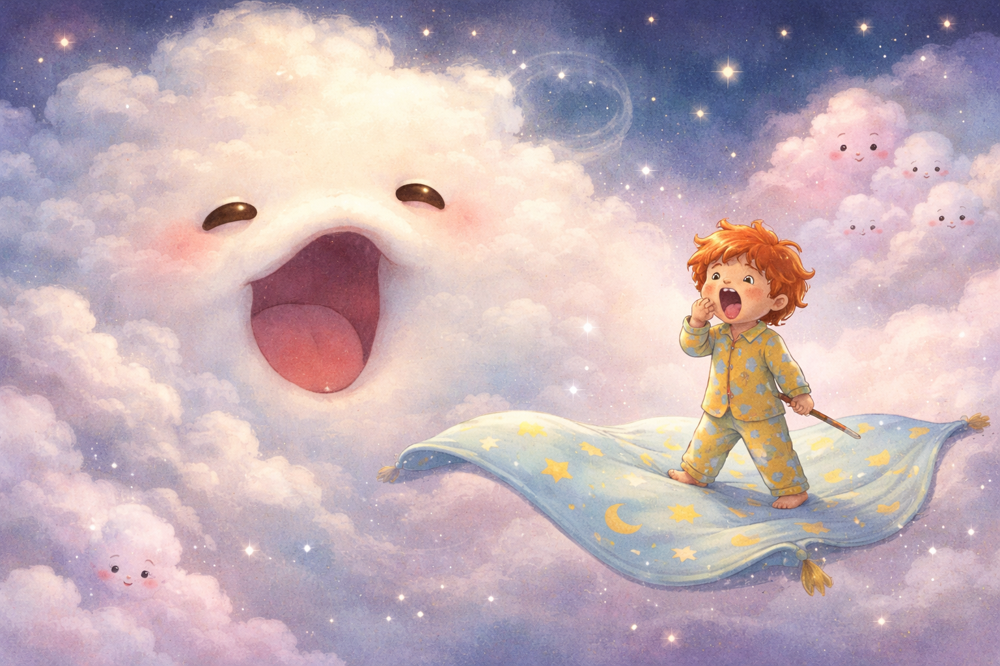
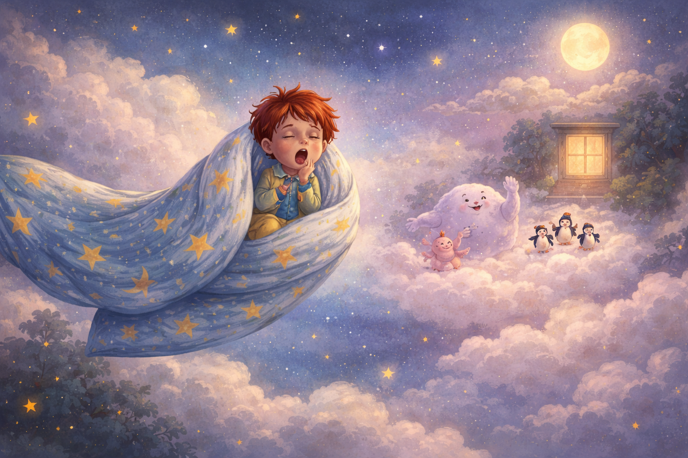
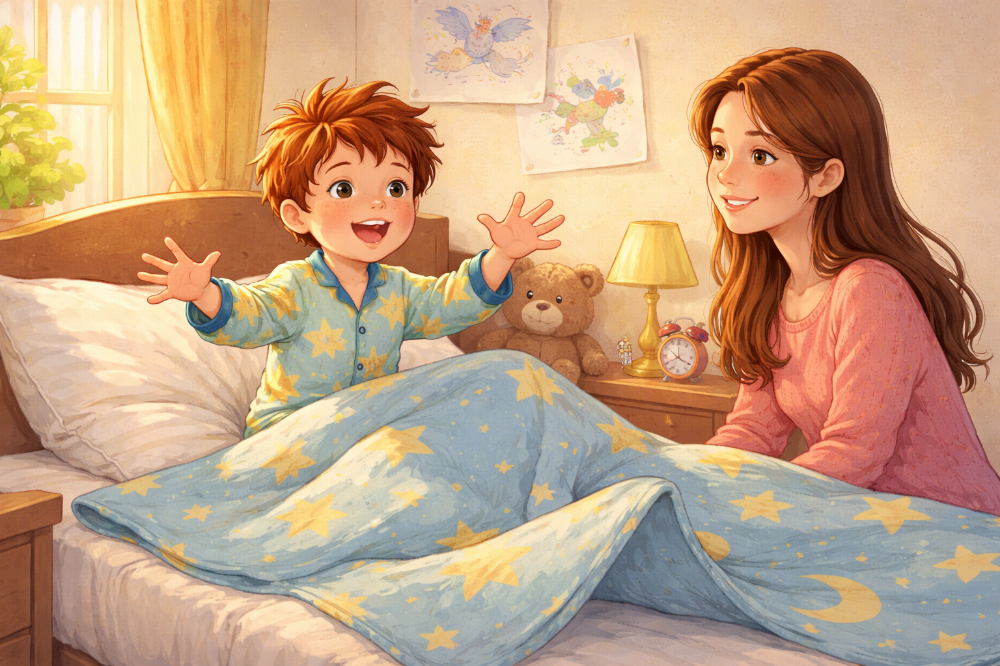

Палавко и летящото одеяло
Вечерта беше дошла тихо. Навън звездите се гушеха в небето, а от хола се чу гласът на мама:
- Палавкооо! Време е за сън!

Но в детската стая Палавко стоеше насред играчките с два различни чорапа, каска на главата и меч от сламка в ръка.
- Ама аз тъкмо започнах битката с извънземните плужеци! - извика той. - Сънят може да почака!
Мама надникна в стаята и се усмихна.
- Лека нощ, приключенецо. Сега е време за сънища, не за плужеци.
- Но аз изобщо не съм уморен! - каза Палавко, протегна се и се прозина толкова широко, че чак каската му се килна.

Мама го целуна по челото и изгаси лампата.
- Добре. Но не забравяй: през нощта, докато децата спят, приключенията не спят.
Палавко се сгуши под одеялото.
Само че не заспа.
- Сънено време? Тц. Не и за мен - прошепна той. - Аз съм Нощният капитан Палавко!

И точно в този миг одеялото под него леко се размърда.
- А?
- Псст! - прошепна тъничък глас. - Готов ли си за нощно приключение?
Палавко се огледа.
- Кой говори?
- Аз съм твоето летящо одеяло.
- Летящо... одеяло?
- Шшт! Само за онези, които не искат да си лягат. Качвай се и се хващай здраво!

Одеялото се надигна, разпъна се като килим и фюююу! - излетя през прозореца.
Минаха над покривите, над светулки и котки, над облаци от пяна и мънички звезди с шапки.
Първата спирка беше Островът на Безсъниците.

Там приказни създания се люлееха на люлки от сън. Едно розово облачно същество се приближи, меко като възглавница и усмихнато като утро.
- Здрасти. Нов ли си тук? Аз съм Сънче.
- Ами... не исках да си лягам и одеялото ме доведе - каза Палавко.
Сънче го погледна сериозно.
- Знаеш ли, че ако не спиш, сънят се натрупва и става сънно чудовище?
- Какво? Истинско?
- О, да. Нарича се Зевлю. Ако не спиш, той се появява и започва да зее толкова силно, че всички наоколо заспиват като пънчета. Дори летящите одеяла.
Палавко се изправи върху одеялото.
- Аха! Значи това е врагът. Трябва да го намеря и да го надхитря!
Одеялото въздъхна, но послушно полетя нататък.

Следващата спирка беше Пещерата на Мечтите.
Вътре всичко беше меко и пухкаво. От тавана капеха сънища: едни весели, други странни, трети толкова объркани, че сигурно сами не знаеха какво сънуват.
Едно малко пухче с очила ги посрещна.
- Шшт. Тук се сънуват идеи. Ако си буден твърде дълго, няма да можеш да си избереш сън. Всички ще се завъртят наведнъж: сън за динозаври, сън за мармалад, сън за летящи пингвини...
- Летящи пингвини? - очите на Палавко светнаха. - Звучи супер!
- Така казват всички - отвърна пухчето. - А после се будят посред нощ, защото пингвините танцуват брейк върху възглавницата им.

И наистина, зад един облак от сън се появиха пингвини с шарени шапки. Те се завъртяха на гръб, плъзнаха се по леда, пляснаха с плавници и започнаха най-смешния брейк танц, който Палавко беше виждал.
Палавко се разсмя.
- Това е най-добрият сън!
- Или най-шумният - каза одеялото и се разклати сънено.
Тогава в далечината се чу:
- Зееееее...
Всички сънища притихнаха.

От мъглата се появи огромно пухкаво същество с добри, сънени очи и уста, която се отваряше като врата към най-меката дрямка на света.
- Това е Зевлю! - извика Сънче.
Палавко стегна меча от сламка.
- Аз не се страхувам!
Зевлю се усмихна сънливо.
- Който не иска да спи, аз го приспивам. Без думи. Само със зеене.
И зина.
- Зееееееее...
Палавко се прозя.
После пак.
И още веднъж.
- Ама аз не съм... уморен... само малко... зеее...

Летящото одеяло го пое внимателно и го понесе обратно през звездите. Пингвините махаха с плавници. Сънче му изпрати пухкава усмивка. Дори Зевлю изглеждаше доволен, сякаш беше свършил важна и много нежна работа.
Одеялото бавно влетя през прозореца и постави Палавко обратно в леглото. Възглавницата го прегърна, пижамата се намести, а одеялото се сгуши върху него.
- Лека нощ, Нощен капитане - прошепна то.

На сутринта Палавко отвори очи.
- Мамо! Сънувах, че летях! И че се борих със Зевлю! И че пингвини танцуваха брейк!
Мама се усмихна.
- Значи летящото одеяло пак е излизало тази нощ.
Палавко погледна одеялото. То си лежеше съвсем обикновено. Само едно ъгълче сякаш му намигна.
- Може би - каза Палавко - понякога, когато не искаш да спиш, точно тогава започва най-хубавото приключение.
И така Палавко откри, че не всяко приключение се случва, докато си буден. Зевлю не беше страшно чудовище, а приятел, който помага на децата да стигнат до света на сънищата.
Понякога най-палавите неща се случват със затворени очи.
А сънят не е краят на деня. Той е началото на приказка.